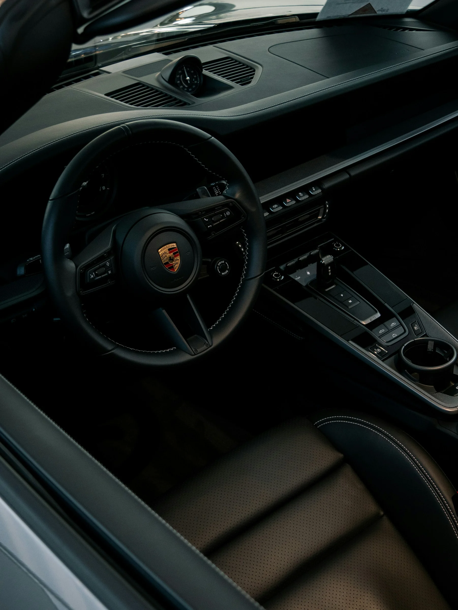

The studio
From the first idea to the details that make it work.
We develop yacht refit concepts, bespoke home interiors and selected automotive detailing projects. Henrique leads design and 3D development; Gonçalo brings practical experience in refurbishment, woodwork and materials. The scope of fabrication and installation is agreed for each project.
Our approach →PeopleIdeasCraftMovementA brighter tomorrow
.webp)
Yachts
Refit · interiors · bespoke
→
Homes
Interiors · renovations · custom
→
Cars
Interiors · detailing · personalisation
→Our approach
A seamless
process.
From the first idea to the final detail, we manage every step in-house and with trusted partners, ensuring a flawless result.
Our process →01Discover
02Survey
03Design
04Visualise
05Develop
06Build
07Install
08Deliver

Featured concept
Princess 56
Interior Refit
A refit concept blending modern design with timeless materials.
View project →Our materials
Exceptional
Materials.
Lasting Details.

We work with the world's finest materials, selected for beauty, performance and durability, across all environments.
Explore materials →